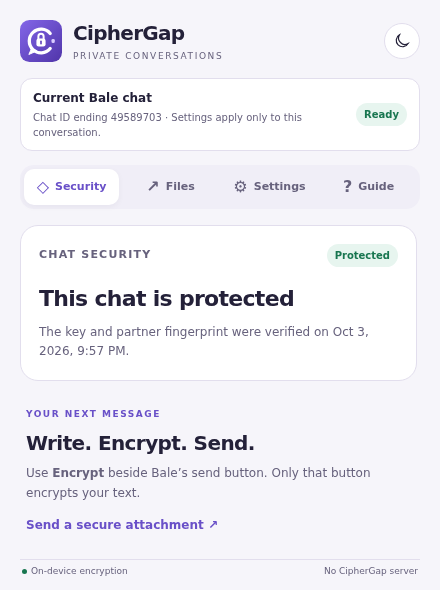
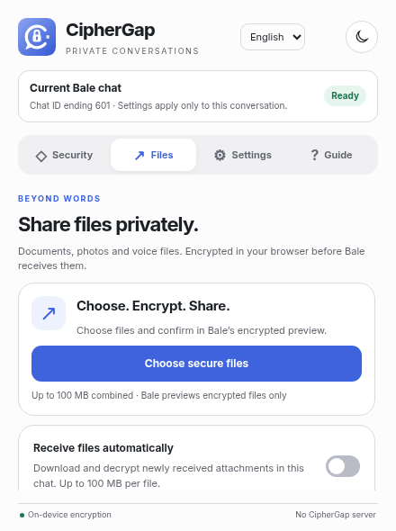

پیامی که با کلید باز میشود
با دکمهٔ Encrypt، متن پیش از ارسال با AES-256-GCM رمزگذاری میشود. باز شدن خودکار پیامها برای هر گفتگو قابل تنظیم است.
متن اصلی در مرورگر پردازش میشودحریم خصوصی، در مرورگر خودتان
یک حرف شخصی یا فایلی که قرار است بین شما بماند. CipherGap آن را پیش از ارسال روی دستگاه رمزنگاری میکند؛ دوستتان با برنامهٔ اندروید یا افزونهٔ دسکتاپ و کلید مشترک آن را میخواند.
✓ متنباز · رمزگذاری محلی · بدون سرور CipherGap
نمایش آموزشی؛ پیام واقعی ارسال نمیشود.
بله، ایتا و تلگرام وب A آمادهاند؛ پیامرسانهای بیشتری در راهاند.
کمتر پیچیدگی، بیشتر کنترل
افزونه کنار ابزارهای آشنای پیامرسان قرار میگیرد.
شما تصمیم میگیرید چه چیزی را رمزگذاری کنید.
با دکمهٔ Encrypt، متن پیش از ارسال با AES-256-GCM رمزگذاری میشود. باز شدن خودکار پیامها برای هر گفتگو قابل تنظیم است.
متن اصلی در مرورگر پردازش میشودانتخاب فایل، پیشنمایش رمزشده و ارسال. گیرنده میتواند فایل را از همان پیام رمزگشایی کند یا دریافت خودکار را روشن کند.
نام اصلی فایل پس از رمزگشایی حفظ میشودتبادل کلید با ECDH انجام میشود. کد ششرقمی را از یک راه مطمئن مقایسه کنید و روی هر دو دستگاه تأیید کنید.
هشدار هنگام تغییر اثر انگشت طرف مقابلاز دستگاه خودتان شروع کنید
یکی روی اندروید، دیگری روی لپتاپ؟ مشکلی نیست. هر نفر روش نصب دستگاه خودش را انتخاب کند؛ سپس در همان گفتگو یک کلید مشترک بسازید.
مشاهدهٔ کد در GitHubاندروید یک برنامهٔ مرورگر مستقل است؛ افزونه داخل Chrome یا Firefox موبایل نصب نمیشود و برنامههای اصلی پیامرسان را تغییر نمیدهد. راهنمای افزونهها برای مرورگر دسکتاپ است.
دستگاهتان را انتخاب کنید؛ فقط مراحل همان نسخه را میبینید.
اندروید ۸ یا جدیدتر و WebView با قابلیت اجرای جدا لازم است. حداقل نسخهٔ اندروید بهتنهایی کافی نیست.
این نسخهٔ آزمایشی با امضای debug منتشر شده است؛ ابتدا در گفتگوی آزمایشی استفاده کنید. نیازی به نصب افزونهٔ دیگری ندارید.
دانلود APK اندروید اطلاعات نسخه و SHA-256فایل را باز کنید. اگر اندروید درخواست کرد، برای همان مرورگر یا برنامهٔ Files اجازهٔ Install unknown apps بدهید؛ پس از نصب آن اجازه را خاموش کنید. Play Protect را غیرفعال نکنید.
در صفحهٔ آغاز، بله، ایتا یا Telegram Web A را انتخاب کنید و مستقیم در وبسایت همان پیامرسان وارد حساب شوید. نشست ورود داخل برنامه نگه داشته میشود.
گفتگو را باز کنید و Chat security را بزنید. همان راهنمای تبادل کلید پایین صفحه برای اندروید و افزونه کاربرد دارد؛ طرف مقابل میتواند از هرکدام استفاده کند.
از Settings زبان فارسی یا انگلیسی، تم روشن یا تیره و اعلانها را انتخاب کنید. اجازهٔ اعلان فقط هنگام روشنکردن آن درخواست میشود؛ رد آن مانع چت نیست.
Android System WebView یا مرورگر تأمینکنندهٔ WebView را از مسیر رسمی دستگاه بهروز کنید و برنامه را دوباره باز کنید. اگر هشدار باقی ماند، این دستگاه فعلاً قابلیت لازم را ندارد؛ از افزونهٔ دسکتاپ استفاده کنید. CipherGap در این وضعیت رمزنگاری را در محیط ناامن اجرا نمیکند.
روی Windows، macOS و Linux. فایل ZIP را استخراج کنید و پوشهٔ افزونه را نگه دارید.
آدرس زیر را در نوار آدرس مرورگر وارد کنید و Developer mode را روشن کنید.
chrome://extensionsروی Load unpacked کلیک کنید و پوشهٔ داخلی CipherGap را که فایل manifest.json دارد انتخاب کنید. پوشهٔ اصلی مخزن را انتخاب نکنید.
از منوی Extensions لوگوی CipherGap را با Pin به نوار ابزار اضافه کنید. صفحهٔ پیامرسان را تازهسازی کنید، وارد حساب شوید و گفتگو را باز کنید.
این روش برای آزمایش است و با بستن Firefox حذف میشود. نصب دائمی در Firefox استاندارد به بستهٔ امضاشدهٔ موزیلا نیاز دارد.
آدرس زیر را در نوار مرورگر وارد کنید.
about:debugging#/runtime/this-firefoxروی Load Temporary Add-on بزنید و فایل CipherGap/manifest.json را انتخاب کنید. دسترسی به پیامرسان را در صورت درخواست مرورگر تأیید کنید.
صفحهٔ پیامرسان را تازهسازی کنید و CipherGap را از نوار ابزار باز کنید. با راهاندازی دوبارهٔ Firefox، افزونهٔ موقت حذف میشود؛ دوباره همان manifest.json را بارگذاری کنید.
از همان بستهٔ Chrome استفاده کنید. راهنمای نصب سازگار با Chromium است؛ تست کامل فعلی روی Chrome و Firefox انجام شده است.
آدرس مرورگر خودتان را انتخاب و در نوار آدرس وارد کنید؛ سپس Developer mode را روشن کنید.
edge://extensionsbrave://extensionsLoad unpacked را بزنید و پوشهٔ داخلی CipherGap را انتخاب کنید؛ manifest.json باید مستقیم داخل آن باشد، نه یک پوشهٔ دیگر.
CipherGap را به نوار ابزار اضافه کنید، دسترسی به پیامرسان را مجاز کنید و صفحهٔ گفتگو را تازهسازی کنید. سپس راهنمای تبادل کلید را دنبال کنید.
از نصب تا اولین گفتگو
با برنامه یا افزونه شروع کنید؛ مراحل امنیت گفتگو روی هر دو یکی است.
نام دکمهها مطابق رابط انگلیسی افزونه است. فارسی یا انگلیسی را از منوی زبان افزونه انتخاب کنید.
روی دسکتاپ از لینکهای زیر وارد شوید و در اندروید پیامرسان را داخل خود CipherGap انتخاب کنید. هر دو نفر به CipherGap نیاز دارید؛ ورود حساب مستقیم با پیامرسان انجام میشود.
اندروید: Chat security در نوار برنامه. دسکتاپ: لوگوی CipherGap در نوار مرورگر، سپس Security.
هر دو نفر همان گفتگو را باز کنید. در بخش Security روی Set up secure chat بزنید. طرف مقابل روی Accept request در کارت همان پیام میزند؛ نیازی به باز کردن پنجرهٔ افزونه ندارد.
از زمان ارسال درخواست، ۱۵ دقیقه فرصت دارید. زمان باقیمانده کنار پیام دیده میشود. کد نمایشدادهشده را در تماس مطمئن یا حضوری مقایسه کنید. اگر یکسان بود، هر دو نفر Codes match — verify را انتخاب کنید. اگر نبود، Codes don’t match را بزنید.
فرستادن کد فقط در همان چت، هویت طرف مقابل را تأیید نمیکند.
متن را در کادر پیامرسان بنویسید و از Encrypt استفاده کنید. طرف مقابل با کلید مشترک پیام را باز میکند؛ باز شدن خودکار از Settings قابل تنظیم است.
دکمهٔ معمولی ارسال پیامرسان، متن را بدون رمزگذاری CipherGap میفرستد.


فراتر از چند کلمه
دریافت خودکار، به انتخاب شما
گزینهٔ Receive files automatically را برای هر گفتگو جدا روشن کنید. فایلهای جدید هنگام باز بودن آن گفتگو دریافت و رمزگشایی میشوند.
گاهی یک استیکر همهچیز را میگوید. از دکمهٔ Emoji & stickers در گفتگو، شکلک را به پیشنویس اضافه کنید و با Encrypt بفرستید. برای استیکر، تب Stickers را باز کنید؛ یکی را انتخاب یا فایل خودتان را وارد کنید. پیشنمایش پیامرسان فقط فایل رمزشده را نشان میدهد. گیرنده با Open آن را داخل پیام میبیند و با Download نسخهٔ اصلی را نگه میدارد.
در اندروید، شکلکهای کیبورد یا منوی خود پیامرسان را با آیکون آبی CipherGap بفرستید. انتخابگر جداگانهٔ استیکر فقط در افزونهٔ دسکتاپ است؛ استیکرهای بومی پیامرسان با CipherGap رمز نمیشوند.
استیکر ثابت و متحرک تا ۵ مگابایت؛ فرمتهای PNG، JPEG، WebP، GIF، AVIF و WebM. هر دو نفر نسخهٔ 1.5.0 یا جدیدتر افزونه یا برنامهٔ اندروید را نصب کنید. استیکرهای منوی معمولی پیامرسان رمزگذاری نمیشوند.
تا ۱۰۰ مگابایت در هر انتخاب و هر فایل دریافتی. برای دانلود مستقیم ناموفق، فایل .cgpe را از پیامرسان دانلود کنید و Choose downloaded file instead را انتخاب کنید.
بعد از اولین پیام
راهنمای کوتاه برای کارهایی که هر روز لازم دارید.
در Settings فارسی یا انگلیسی و تم روشن یا تیره را انتخاب کنید. زبان اولیهٔ اندروید از دستگاه میآید؛ زبان سایت را از بالای صفحه عوض کنید.
CipherGap enabled همهٔ گفتگوها را متوقف میکند؛ Enabled in this chat فقط همین گفتگو را. برای هر گفتگو، رمزگشایی خودکار را جدا تنظیم کنید.
اعلانها را در Settings روشن کنید. فقط هنگام اجرای صفحه و باز بودن برنامه کار میکنند؛ در پسزمینه یا پس از بستن برنامه اعلان پوش نداریم. متن پیام، نام فایل و کلید در اعلان نمیآید.
حذف کلید گفتگو تأیید میخواهد و ممکن است پیامهای قدیمی دیگر باز نشوند. Clear browser data در اندروید شما را از پیامرسانها خارج میکند و کلیدها و تنظیمات محلی را پاک میکند؛ پیامهای قبلاً ارسالشده حذف نمیشوند.
در اندروید، Download پنجرهٔ ذخیرهٔ فایل دستگاه را باز میکند؛ مسیر و نام فایل را خودتان انتخاب کنید. Home به انتخاب پیامرسان برمیگردد و Back ابتدا داخل صفحه به عقب میرود.
شفافیت، بخشی از اعتماد است
CipherGap سرور پردازش جداگانهای ندارد. رمزگذاری و رمزگشایی در مرورگر انجام میشود؛ پیامرسان همچنان فایل و متن رمزشده را جابهجا میکند.
CipherGap چتها و کلیدهای شما را به سرور خودش نمیفرستد؛ پردازش روی دستگاه انجام میشود. فرادادهٔ گفتگو پنهان نمیشود. متن رمزگشاییشده داخل صفحه برای کد همان پیامرسان قابل مشاهده است؛ فقط روی دستگاه قابل اعتماد استفاده کنید.
کد رمزگذاری را ببینیدپیش از شروع
اگر چیزی درست کار نکرد، اینجا شروع خوبی است.
نسخهٔ فعلی از بله وب، ایتا وب و تلگرام وب A پشتیبانی میکند. روبیکا و واتساپ در دست توسعه هستند. در ایتا و تلگرام گفتگویی با شناسهٔ عددی باز کنید؛ تلگرام وب K هنوز پشتیبانی نمیشود.
زیر پیام رمزشده، راهنمای نصب و لینکهای GitHub و همین وبسایت را میبیند. بعد از نصب نسخهٔ ۱.۴.۰ یا جدیدتر و تنظیم کلید مشترک، پیام باز میشود و راهنما از نمایش گفتگو کنار میرود. با توقف افزونه، راهنما دوباره دیده میشود.
بله؛ هر نفر میتواند برنامهٔ اندروید یا افزونهٔ دسکتاپ را انتخاب کند. هر دو باید در همان گفتگو کلید مشترک بسازید و کد ششرقمی را از راه مطمئن مقایسه کنید.
خیر. برای متن از دکمهٔ Encrypt استفاده کنید. ارسال عادی پیامرسان، عادی باقی میماند. برای فایل رمزشده، دکمهٔ Encrypted file را انتخاب کنید. دکمهٔ فایل عادی پیامرسان، فایل عادی میفرستد.
تغییر اثر انگشت میتواند بعد از تبادل مجدد کلید یا تغییر دستگاه رخ دهد. قبل از ادامه، هویت طرف مقابل را از یک راه مطمئن بررسی کنید. در صورت تفاوت کد، گزینهٔ Codes don’t match را انتخاب کنید و دوباره تبادل کلید انجام دهید.
درخواست و کد تأیید پس از ۱۵ دقیقه منقضی میشوند. شمارش معکوس کنار پیام به صفر میرسد و کارت خاکستری میشود. درخواست تازه بفرستید و کد تازه را مقایسه کنید؛ باز کردن دوبارهٔ صفحه، زمان درخواست قدیمی را تمدید نمیکند. کلیدهای قبلی با انقضای درخواست حذف نمیشوند.
در Settings گزینهٔ CipherGap enabled را برای توقف همهٔ گفتگوها خاموش کنید؛ Enabled in this chat فقط همان گفتگو را متوقف میکند. کلیدها حذف نمیشوند. دکمهٔ Pause chat داخل گفتگو هم همین کار را انجام میدهد.
برای باز کردن آن، کلید زمان ارسال لازم است. تعویض یا حذف کلید ممکن است باعث شود پیامها و فایلهای قبلی با کلید فعلی باز نشوند. قبل از حذف کلید، این موضوع را در نظر بگیرید.
کلید گفتگو و گزینهٔ Receive files automatically را بررسی کنید. این قابلیت فقط برای فایلهای جدیدِ دریافتی هنگام باز بودن گفتگو است. فایلهای قدیمی را با Decrypt & view باز کنید؛ برای دریافت مستقیم ناموفق، از انتخاب فایل دانلودشده استفاده کنید.
صفحهٔ پیامرسان را تازهسازی کنید، گفتگو را باز کنید، فعال بودن افزونه و مجوز دسترسی به پیامرسان را بررسی کنید و فقط یک نسخهٔ CipherGap را فعال نگه دارید. نصب موقت فایرفاکس پس از راهاندازی دوبارهٔ مرورگر نیاز به بارگذاری مجدد دارد.
خیر. برنامهٔ اندروید CipherGap یک مرورگر برای نسخهٔ وب پیامرسانهاست؛ برنامههای اصلی را تغییر نمیدهد. روی دسکتاپ هم افزونه فقط در صفحهٔ وب پیامرسان کار میکند.
فعلاً نسخهٔ iOS یا افزونهٔ Safari نداریم. برای اندروید از APK مستقل و برای لپتاپ از راهنمای Chrome یا Firefox استفاده کنید. نصب این سایت به شکل PWA، CipherGap را داخل پیامرسانهای دیگر فعال نمیکند.
برنامه مرورگر خودش را دارد و نشست Chrome یا Firefox را وارد نمیکند. داخل CipherGap وارد شوید. بین پیامرسانها فقط یک صفحه فعال است؛ تعویض پیامرسان ممکن است تبادل کلید ناتمام را از نو لازم کند. تماس و دسترسی دوربین یا میکروفون در این نسخه پشتیبانی نمیشود.
اندروید ۸ شرط نصب است؛ رمزنگاری به WebView با قابلیت اجرای جدا هم نیاز دارد. هشدار سازگاری را با بهروزرسانی رسمی WebView بررسی کنید. برای اعلان، گزینه و مجوز آن را روشن کنید و برنامه و گفتگو را باز نگه دارید؛ اعلان پسزمینه نداریم.
گفتگوی بعدی، با یک انتخاب تازه
اندروید 0.1.1 آزمایشی · افزونه 1.5.0 · بله، ایتا و تلگرام وب A